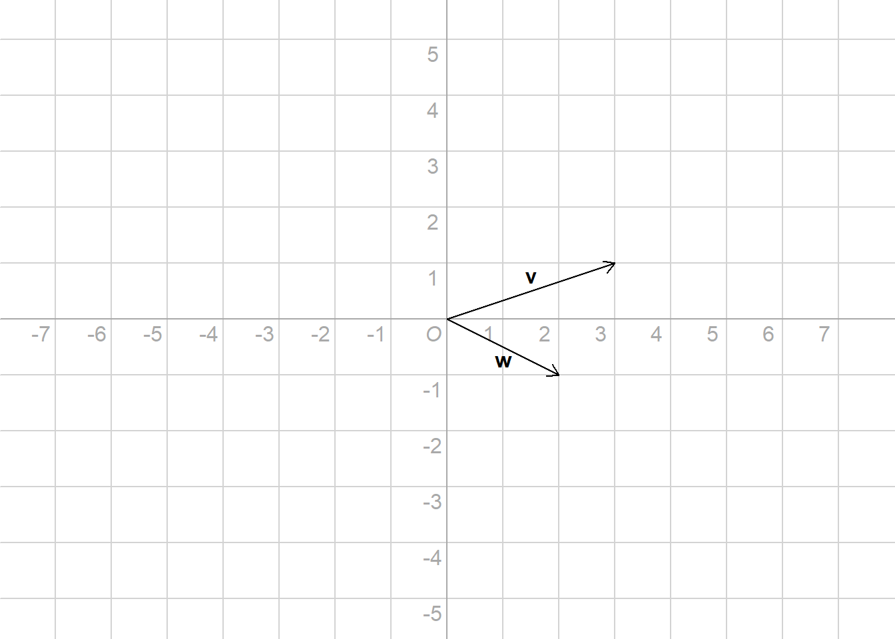
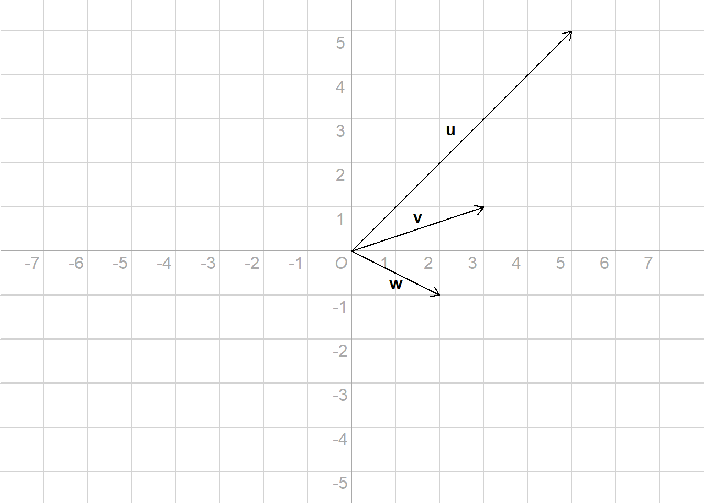

Chapter 5 Linear Algebra
In this chapter you will learn how to transpose, add, multiply, and invert matrices. This will help you understand how estimates of linear models are actually obtained. Perhaps even more importantly, it will enable you to read equations that use vector and matrix notation.
5.1 Vectors
Exercises
- What is the sum of the following set of vectors?

\(\begin{bmatrix} -1 \\ 3 \end{bmatrix} + \begin{bmatrix} 8 \\ -2 \end{bmatrix} = \, ?\)
\(\begin{bmatrix} 2 \\ 8 \\ 8 \end{bmatrix} + \begin{bmatrix} 1 \\ 2 \\ 0 \end{bmatrix} = \, ?\)
5.2 Linear Combinations
Exercises
\(4\begin{bmatrix} -0.9 \\ 1.3 \end{bmatrix} + 3 \begin{bmatrix} 0.7 \\ 0.6 \end{bmatrix} = \, ?\)
When does the span of two vectors form a line?
See the figure below. Is the vector \(\vec{u}\) linearly dependent on \(\vec{v}\) and \(\vec{w}\)? Why?

(…)